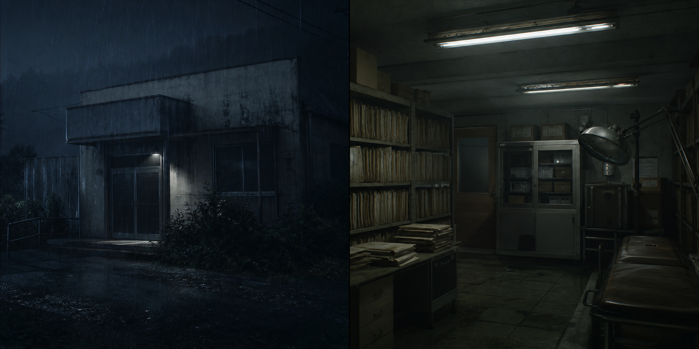

公開情報
- 発行者: 紅坂医療設備
- 夜間対応者: 早瀬修
- 作業名目: 薬品保管庫 点検
- 現場メモ: 夜間カード、裏口廊下、第二処置室の記録が分離している
保守受付メモ
通常の点検予定は2010年10月5日で終了しており、10月6日夜の作業予定は台帳にありません。
請求上は薬品保管庫の夜間作業ですが、現場メモには「裏口廊下」「外側から閉鎖」「夜間カード回収」の語が残されています。
第二処置室の設備異常と薬品保管庫の請求が同じ夜に現れる理由は、院内ログ側にも控えが残っています。
内部リンク
夜間保守記録には、裏口廊下が通常点検では説明できない場所として残っています。
請求控えには、表に出た名目と実際の作業範囲のずれがあります。
